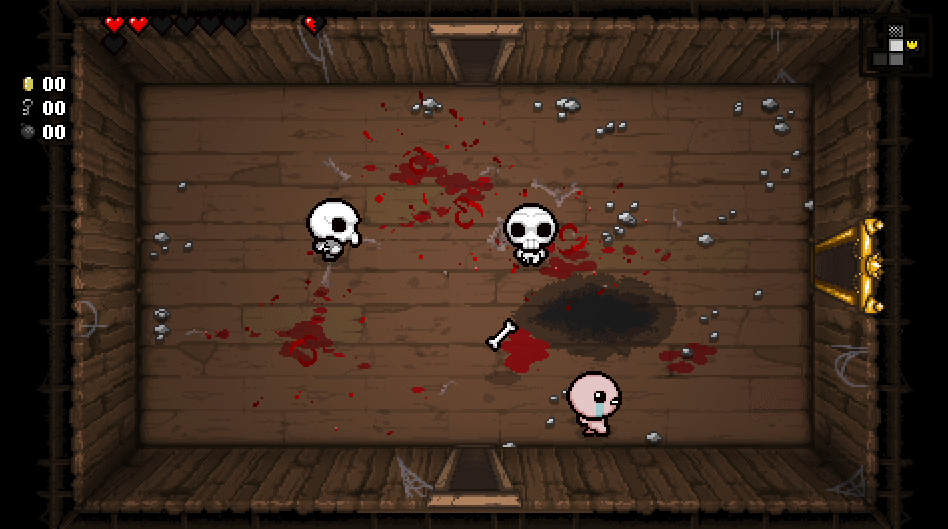
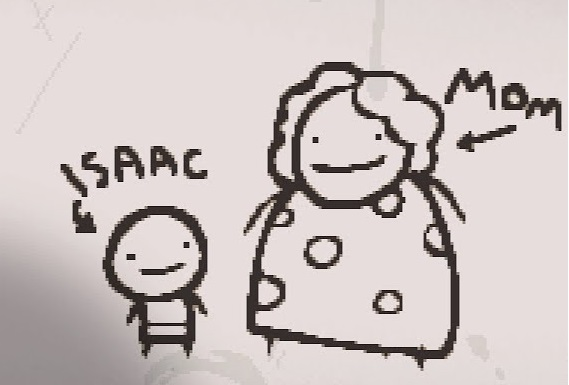
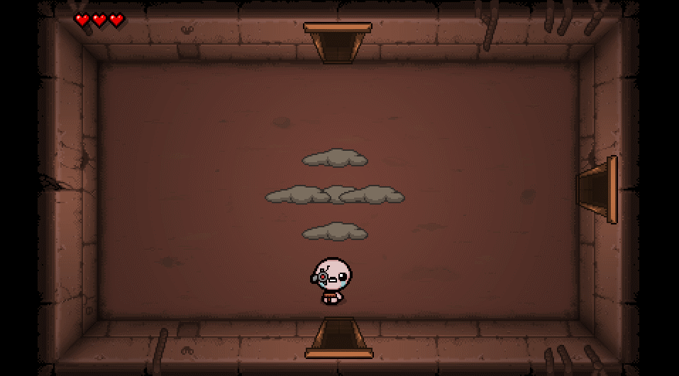

Eldobod az agyad!!
A játék bemutatása
A The Binding of Isaac Egy roguelike stílusú játék, amelyben Isaac történetét követheted nyomon, miközben ellenségekkel küzd és kincseket talál a barlangokban. A játék különlegessége a véletlenszerűen generált pályák, izgalmas tárgyak és a számos titok, amelyet felfedezhetsz.
Története
Isaac és anyukája boldogan éltek egy kis házban. A kisfiú játékaival és rajzolással töltötte el az időt, miközben anyukája keresztény televíziós műsorokat nézett a tévében. Vélhetően ezek hatására azt képzelte, hogy Isten szól hozzá. Ezek eredményeként először elvette fiától a játékokat és bezárta a szobájába, ám arra is felszólítást kapott, hogy hitét bebizonyítandó, áldozza fel fiát. Isaac minderről tudomást szerzett és még épp időben leugrott egy csapóajtón keresztül az alagsor ismeretlen mélységeibe. A játék itt kezdődik.
Miért érdemes játszani?
Szívszorító és – az egyszerűbb grafika ellenére – horrorisztikus játék, de hatalmas előnye, hogy jelentősebb időbefektetés nélkül profi lehetsz benne. Egyszerűen játszható és kapott egy csomó kiegészítő tartalmat az elmúlt években. Elég sokáig veled lehet, ha belevágsz: az egyik hozzászóló több mint száz órát gond nélkül beleölt. Ez jól szemlélteti, hogy mennyire élvezetes.
